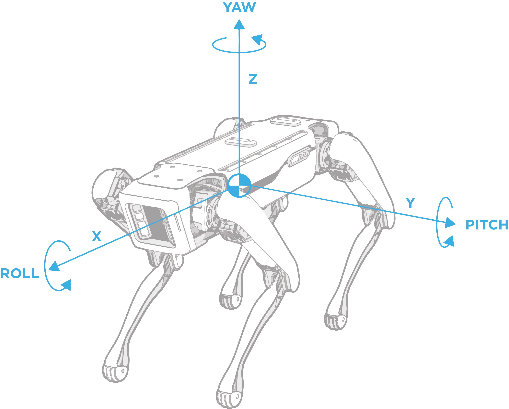

Geometry and Frames¶
Spot uses 3D transformations to describe itself, objects around it, and its understanding of the world. Spot has different frames to represent these objects, such as the “body” frame, which describes Spot’s body. A 3D transformation is then used to describe a relationship between two frames using a translation vector and a rotation quaternion. These transformations can be used to orient Spot in space and determine its location.
These transformations are expressed in 3D space using the x, y, and z axes. A translation is a 3 element vector (x, y, z) describing the difference between two frames’ origins. A rotation is a quaternion (w, x, y, z) that describes the change between two frames’ coordinate axes orientations. In the API geometry, we use an SE3Pose to encapsulate the translation and rotation used for transformations. Similarly, we use strings to describe different frames that can be related to each other using SE3Pose transformations.

For example, a camera frame origin may be located at the lens of the camera with the Z axis pointed out and the X and Y axes aligned with horizontal/vertical dimensions of the picture. A point at [0, 0, 1m] in the camera frame would be in the center of the lens and 1 meter forward of origin where the camera is pointing. A transformation could be used to describe how to express this camera frame with respect to Spot’s body frame, and the API adopts a notation of body_tform_camera to denote the SE3Pose of this transformation.
Frames in the Spot robot world¶
Generally, you will only need to work with the following frame types: inertial frames, sensor frames, object frames, and the robot’s body frame. However, the robot may also report other frames it has knowledge about.
The inertial frames of Spot are the “vision” frame and the “odom” frame. These frames have an origin and initial rotation matching that of the robot’s body when it boots up.
The “body” frame describes the robot’s position and orientation, as shown in the illustration. Other frames exist for each joint on the robot. To get a complete rendition of the robot’s pose, add the frame values for each joint on the robot: two hip joints and one knee per leg.
Sensor frames describe the origin of a given sensor and its coordinate axes. The sensor messages from the robot, such as camera images or point clouds, will include the string frame name of the sensor. Sensor frames are commonly used to describe objects that were detected using the sensor.
Objects can also be described using a frame. For example, a fiducial has an origin in the center of the tag, and x,y axes aligning with the tag axes and the z-axis pointing out of the page.
As the robot moves around in the world, the relationship between the two frames can either stay the same always, or be non-static and dynamically changing. The transformation between an inertial frame and the robot’s body frame will change as the robot moves. In contrast, the transformation between the robot’s body and the camera frame will not change regardless of whether the robot is moving or not.
The following frames are known to Spot:
“odom” frame: An inertial frame that estimates the fixed location in the world (relative to where the robot is booted up) using the kinematics of the robot.
“vision” frame: An inertial frame that estimates the fixed location in the world (relative to where the robot is booted up), and is calculated using visual analysis of the world and the robot’s odometry.
“body” frame: A frame describing the robot body’s position and orientation. The frame’s origin is at the geometric center of the hips with the x-axis pointing from the hip center to the middle of the front hips, as shown in the illustration above.
“flat_body” frame: A gravity-aligned frame describing the robot body’s position and orientation. The position is at the robot’s center, and the x/y-axes lie flat in the “odom” frame x-y plane. Specifically, the x-axis is the normalized projection of the robot’s “body” frame x-axis to the “odom” x-y plane.
“gpe” frame: A frame that represents the robot’s ground plane estimate. The full SE(3) pose can be converted into a plane (a point and normal).
“fiducial_XXX” frame: A frame that represents a raw fiducial detection, where “XXX” will be filled with the fiducial’s tag ID.
“filtered_fiducial_XXX” frame: A frame that represents a filtered, more stable fiducial detection, where “XXX” will be filled with the fiducial’s tag ID. This frame is only valid for fiducials which are static in the world and should not be used for fiducials which may be moving.
“frontleft_fisheye” frame: An example sensor frame; this frame name represents the frontleft fisheye camera. All five cameras on spot have their own sensor frame names, which will describe the exact camera sensor’s position and orientation.
In the API, other frames not listed above will often be captured by name in the proto definition. Typically, an object will have one or more fields prefixed with “frame_name_” to describe its specific frames, and the transforms associated with these frames can then be found in that object’s transform snapshot. For example, the LocalGrid proto has frame_name_local_grid_data which refers to the position and orientation of the top, left corner of the grid map.
Transformations between Spot’s frames¶
Spot has knowledge about many of the frames mentioned above and how they relate to each other. These relationships between frames can be stored in a graph-like structure, where an edge represents a transformation A_tform_B, and the nodes represent the frames “A” or “B.” The API creates a tree-graph of all the relevant frames, where each frame can uniquely be described relative to a different frame using transformations and all frames are described relative to a single root frame.
Different services provide a snapshot of the transformation tree graph at a given timestamp (which is described in the field acquisition_time), which includes transformations between “vision,” “odom,” and “body” frames in addition to any other relevant frames, such as the sensor frames for images or frames for world objects. All transformations in the snapshot are guaranteed to provide the most accurate SE3Pose for the timestamp.
Transformation Math¶
Since frames are related to each other via transformations, we can change geometric data expressed in one frame to be expressed in another frame with the appropriate transformations. This is done by multiplying transformations together. For example, say the robot detected a soccer ball in its left camera and computed the transformation left_camera_tform_soccer_ball to express the position of the soccer ball relative to the camera. As well, the robot knows the transformation vision_tform_left_camera, which describes the left camera frame in the vision inertial frame. Using these transformations, we can compute the position of the soccer ball in the vision inertial frame:
vision_tform_soccer_ball = vision_tform_left_camera * left_camera_tform_soccer_ball
By multiplying the transformations together, we can “cancel out” the left camera frame to determine a new transformation.
A transformation can also be inverted. For the transformation vision_tform_body which describes Spot’s body within the vision inertial frame. If we invert this transformation, we compute body_tform_vision. This transformation now describes the vision inertial frame with respect to the robot body, so where origin of the vision frame is relative to Spot’s current body position. Inverting a transformation can be useful if you want to multiply two transformations together that do not have a matching middle element. For example, if we want to compute the transformation vision_tform_body, but only know the transformations vision_tform_odom and body_tform_odom, then we can use the inverse operation:
vision_tform_body = vision_tform_odom * body_tform_odom.inverse()
Other mathematical operations can be computed with an SE3Pose transformation, such as creating a 4x4 matrix, transforming points, or computing roll, pitch, or yaw. The API provides helper functions for these operations, including transformation multiplication and inversion, in math_helpers.py.
Adding frames during robot operation¶
Frames can be added by client applications at run time. For example, you can add a frame for an AprilTag fiducial that the robot discovers during operation using the world object service.
...
frame_tree_edges = {} # Dictionary mapping child frame name to the
# ParentEdge, which stores the parent frame name
# and the SE3Pose parent_tform_child
# Example of a special transform that we want to add to the robot.
vision_tform_special_frame = \
SE3Pose(position=Vec3(1,1,1),rotation=Quaternion(w=1,x=0,y=0,z=0))
# Update the frame tree edge dictionary with the new transform using the helper functions in frame_helpers.py.
frame_tree_edges = add_edge_to_tree(frame_tree_edges, \
vision_tform_special_frame, VISION_FRAME_NAME, "special_frame")
# Pack the dictionary into a FrameTreeSnapshot proto message.
snapshot = FrameTreeSnapshot(child_to_parent_edge_map=frame_tree_edges)
# Create the world object containing the special frame.
world_obj_special_frame = WorldObject(id=21, name="SpecialFrame", \
transforms_snapshot=snapshot, acquisition_time=time.now())
# Add the world object containing the special frame to Spot using a mutation request.
world_object_client.mutate_world_objects(mutation_req= \
make_add_world_object_request(world_obj_special_frame))
...